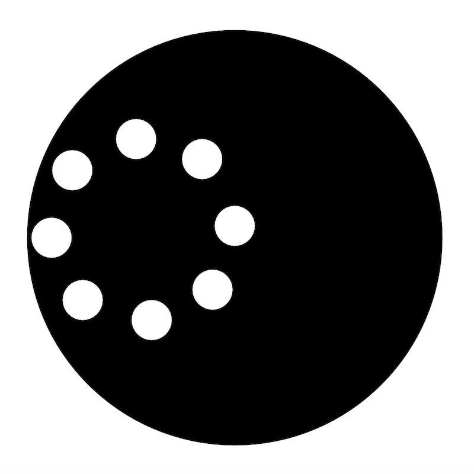
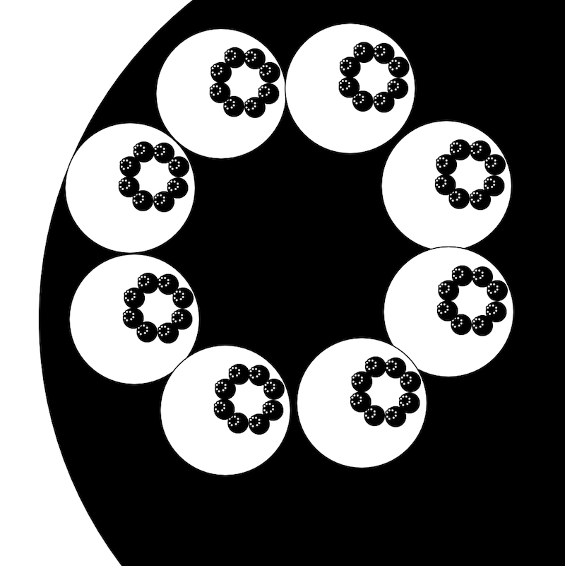
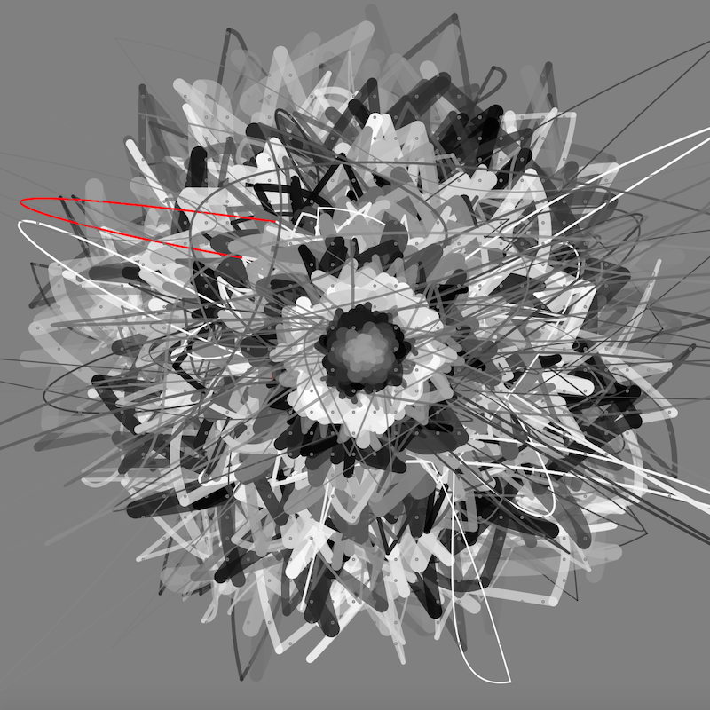
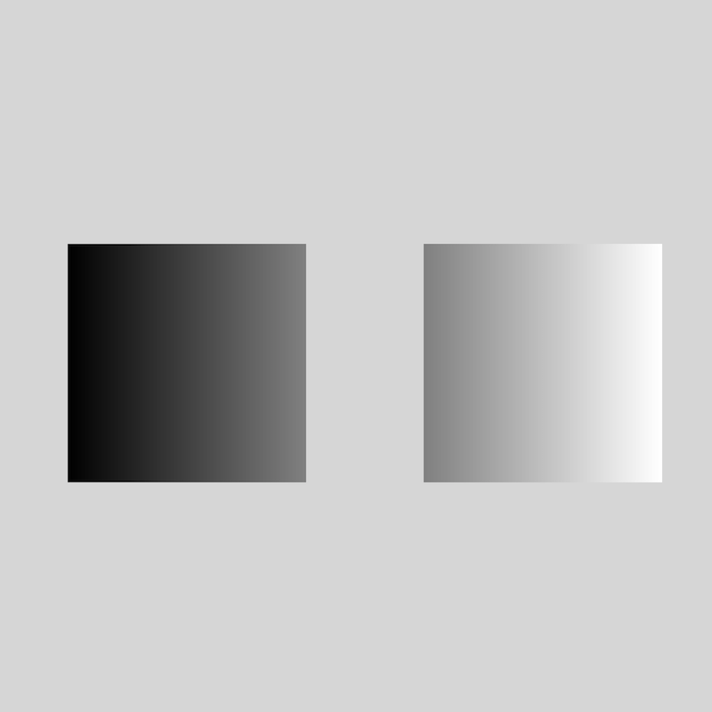
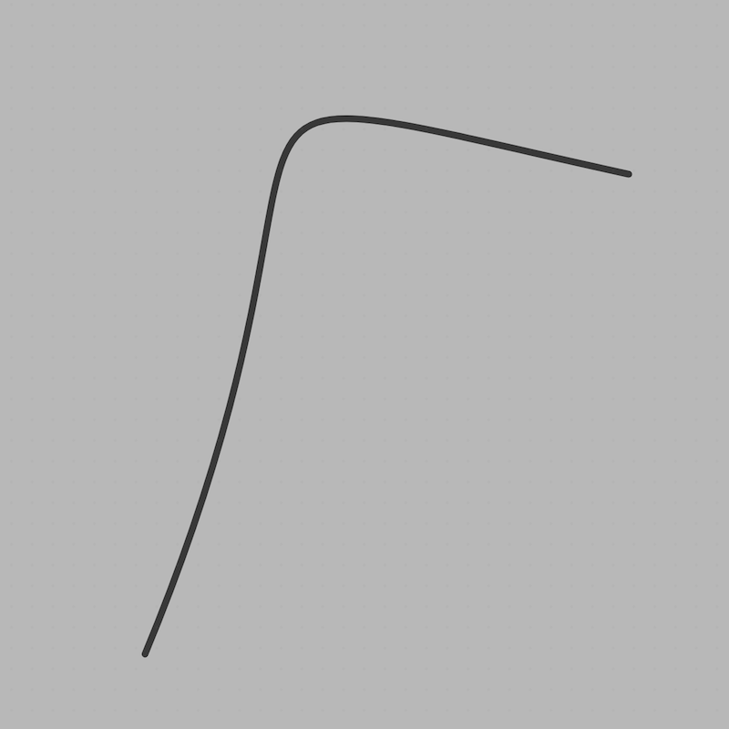
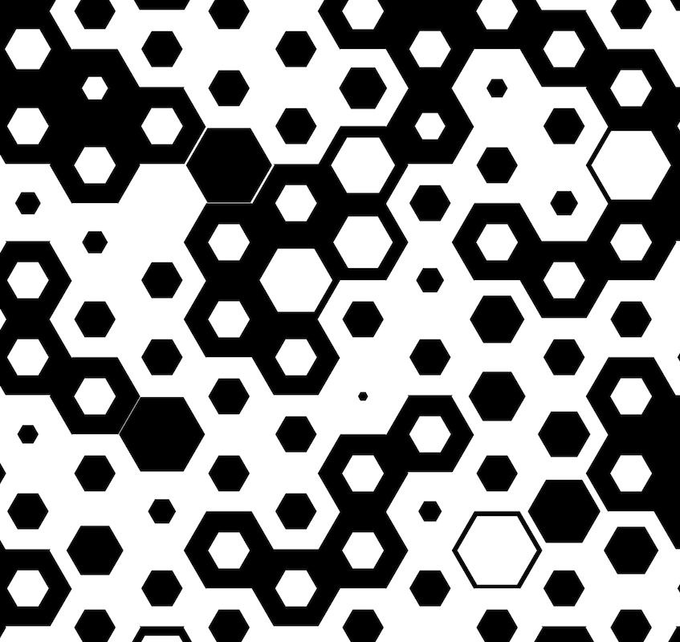
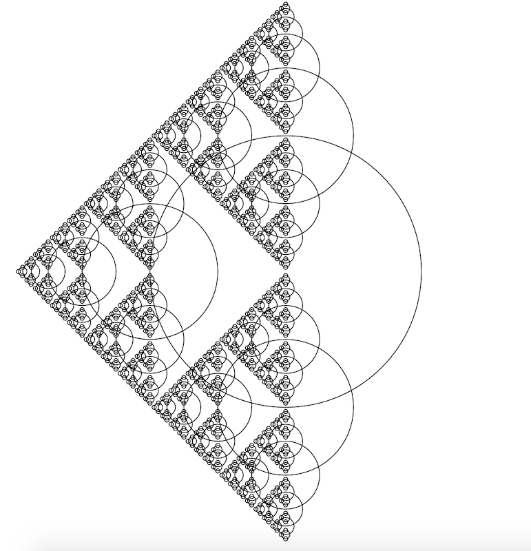

nilnil
Roller on Rails
Atticus

Illusion of dots rolling around. But focus on one dot to see its real path.
source
Turboroller
Atticus

Rollers inside of rollers inside of a roller will
melt
your brain.
source
Blossom
Marc

Takes a few minutes to bloom.
source
Shifty Eyes
Atticus

Optical illusion where a pulsing background makes two static images appear to be animated.
source
Tiny Dancer
Marc

Dances like no one is watching.
source
Hex
Atticus

Inspired by the gif at
http://brainisms.com/optical-illusions/
.
source
Circlepinski
Marc

Cute little Sierpinski triangle made of circles.
source